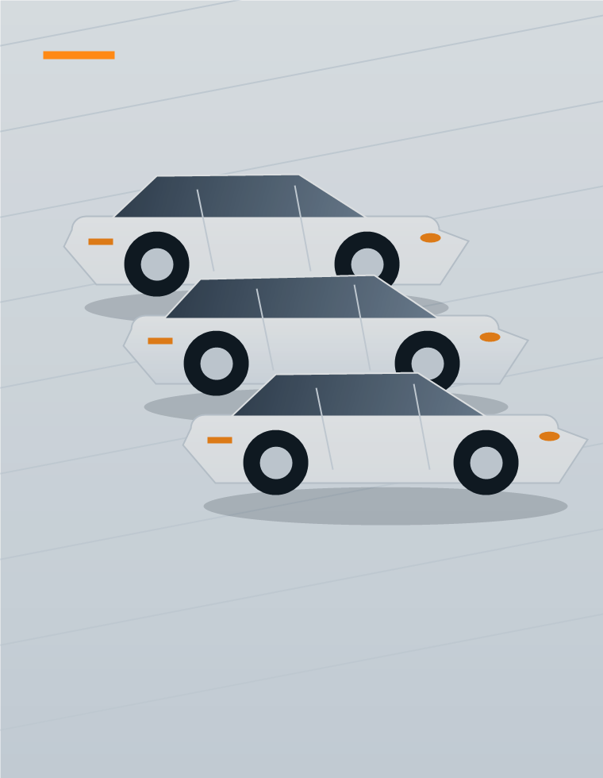

Gépjármű-beszerzés
Új és használt gépjárművek beszerzése, üzembe helyezése, dokumentációja és átadása az Ön igényeire szabva.
Szolgáltatásaink
A Perfect Fleet tartós bérlet konstrukciói egy átlátható havidíjban kínálnak mindent, amire a teljes körű autóhasználathoz szükség lehet. Az alapcsomag is olyan elemeket tartalmaz, amelyeket máshol gyakran csak felár ellenében kap meg.

A Perfect Fleet szemlélete szerint a tartós bérlet akkor ad valódi értéket, ha nem csak finanszírozást kínál. Ezért a szolgáltatások célja, hogy az autó használata a teljes futamidő alatt rendezett, kiszámítható és kényelmes maradjon.
Káresemény esetén segítséget nyújtunk a helyszíni ügyintézésben, kapcsolatot tartunk a biztosítóval a kárügyintézés során, és partnereinken keresztül gondoskodunk a jármű gyors és szakszerű javításáról.
A GPS, digitális menetlevél, automatikus parkolás és üzemanyagkártya nem csak kényelmi extra. Ezek az elemek csökkentik a manuális adminisztrációt, és átláthatóbbá teszik a céges autóhasználatot.
GYIK
Az alapcsomag több, máshol gyakran feláras elemet tartalmazhat. A pontos tartalmat minden ajánlatban egyedileg rögzítjük.
A konstrukció az igényekhez igazítható, ezért érdemes ajánlatkéréskor jelezni, mely elemek fontosak.
A biztosítások ügyintézésében, káresemény esetén pedig a folyamat koordinációjában is segítséget nyújtunk.
Automatikusan rögzíti az útnyilvántartáshoz szükséges adatokat, így kevesebb kézi adminisztrációra van szükség.
Írja meg, milyen autóra vagy flottára keres megoldást, és összeállítjuk a megfelelő tartós bérlet konstrukciót.
Ajánlatot kérek